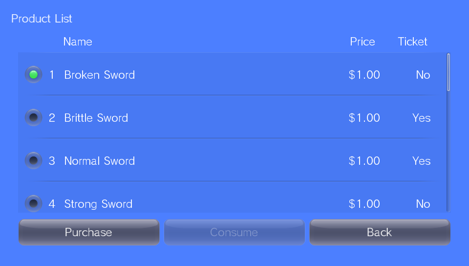
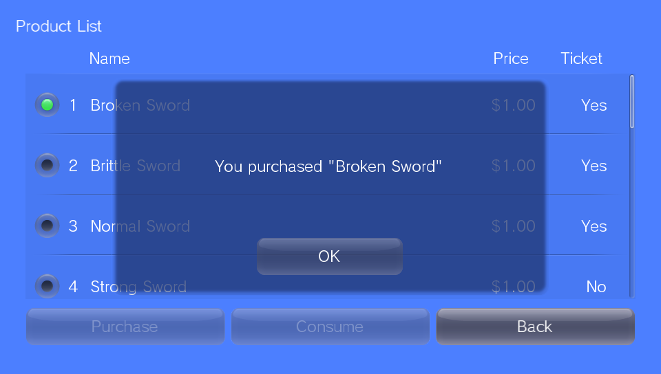
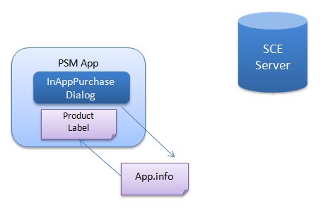
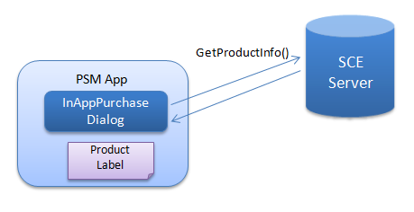
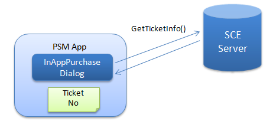
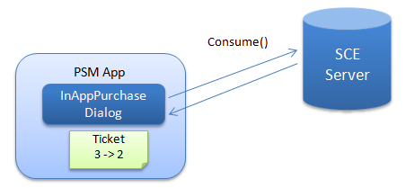
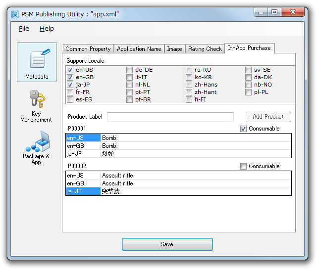

この文書ではアプリ内課金について説明します。
Contents
アプリ内課金とは、PSMアプリ内でエンドユーザーが有料のコンテンツ(以下、プロダクト)を購入する仕組みをいいます。
プロダクトとは、エンドユーザーが有料で購入するコンテンツのことをいいます。
プロダクトの例 : 回復ドリンクや薬草などのアイテム、ゲーム内の架空貨幣、体験版アプリを正式版に更新する権利、壁紙、追加ステージ、追加キャラクタなど。
プロダクトには通常型、消費型の2種類があります。
- 通常型は、購入は一度のみで、消費することはできません。
- 消費型は、プロダクトを消費することが可能です。何度でも購入できます。
チケットとは、エンドユーザーが購入によって得た、プロダクトの使用権のことをいいます。チケットはソフトウェア的なデータとしてPSMアプリに保持されます。
エンドユーザーは以下のようにしてプロダクトを購入します。
サンプル sample/Services/InAppPurchaseSample2 を開いてください。
プロダクトを選択する。
決定してプロダクトを購入する。

アプリ内課金のプログラム処理は、InAppPurchaseDialogクラスを利用して行います。
以下、処理の流れを説明します。
- InAppPurchaseDialogクラスのインスタンスを作成します。
インスタンス作成時、メタデータapp.info(app.xml)に記述されているプロダクトのラベルや名前など(後述)がインスタンスに読み込まれます。
図1
InAppPurchaseDialog.GetProductInfo()を使い、価格などプロダクト情報を弊社のサーバーから取得します。
図2
InAppPurchaseDialog.GetTicketInfo()を使い、購入ずみのチケット情報を弊社のサーバーから取得します。
図3
InAppPurchaseDialog.Purchase()を使い、指定のプロダクトを購入します。
プロダクトを購入すると、プロダクトに対応するチケットがOkになり、そのプロダクトを使用できるようになります。

図4
- 消費型のプロダクトの場合、InAppPurchaseDialog.Consume()を使い、指定のプロダクトを消費します。
消費型のプロダクトの使用状態は、チケット内では数値で保持されています。
図5
アプリ内課金をPSMアプリに実装する場合、以下の手順で作業を行います。
まずPublishing Utilityでプロダクトのデータを作成します。
- Publishing Utilityは [スタートメニュー] - [すべてのプログラム] - [PlayStation Mobile] - [Publishing Utility]から起動してください。
プロダクトデータの設定については、 Publishing Utilityの使い方 を参照してください。
なお、価格の設定はPublishing Utilityでなく、後述のDevPortalで行います。

- 編集したapp.xmlを保存します。
app.xml<purchase> <product_list> <product label="SWD001" type="normal"> <name> <localized_item locale="en-US" value="sword" /> <localized_item locale="ja-JP" value="刀" /> </name> </product> <product label="MONY01" type="consumable"> <name> <localized_item locale="en-US" value="100gold" /> <localized_item locale="ja-JP" value="金１００" /> </name> </product> </product_list> </purchase>プロジェクトのビルド時に、app.xmlが自動的にapp.infoに変換されます。
サンプル sample/Services/InAppPurchaseSample、sample/Services/InAppPurchaseSample2 を参考にして課金処理を実装してください。
マスターパッケージを作成し、弊社に提出します。
マスターパッケージの作成は、 マスターの作成と提出 概要 を参照してください。
弊社のWebサイトDevPortalにアクセスし、プロダクトの価格を設定します。
一度購入すれば何度でも利用できるアイテムなど、通常型プロダクトの購入フローは、たとえば以下のように実装することができます。

- アプリ内課金のための、専用のシーンを用意する。
- ユーザーの操作にしたがって、アプリ内課金のシーンに移動する。
- アプリ内課金のシーンのみで、アプリ内課金ダイアログにアクセスする。
- 購入ずみ確認または購入処理が成功したとき、アイテムを利用可能にする。
- なんらかのエラーが発生した場合は、エラーを表示して前のシーンに移動する。
この方法には以下の利点があります。
- アプリ内課金ダイアログの管理が、簡単に実装できる。
- エラーが発生した場合、ユーザー操作で簡単にリトライできる。
- ネットワーク接続できれば、別のデバイスでも購入ずみアイテムを利用できる。
しかし以下の点に注意が必要です。
- 購入ずみアイテムを利用する場合でも、ネットワークアクセスが必要。
- ネットワーク接続できない場合は、購入ずみアイテムでも利用できない。
ネットワーク接続できない状態でも購入ずみアイテムを利用できるようにするために、セーブデータを使用して実装することが推奨されます。

- 購入ずみアイテムの情報を、セーブデータに保存する。
- ユニーク ID を使用して、セーブデータを暗号化する。
セーブデータを暗号化することで、ある程度不正コピーを防ぐことができます。ユニーク ID はアカウント情報から取得することができます (Sce.PlayStation.Core.Services AccountInformation)
何度でも購入できその数に応じて利用できるコインなど、消費型プロダクトの購入フローは、たとえば以下のように実装することができます。

- 通常型プロダクトと同様に、アプリ内課金のための専用のシーンを用意する。
- ユーザーの操作にしたがって、アプリ内課金のシーンに移動する。
- アプリ内課金のシーンのみで、アプリ内課金ダイアログにアクセスする。
- Purchase と Consume を実行してそれらが成功したら、コイン数を増やす。
- なんらかのエラーが発生した場合は、エラーを表示して前のシーンに移動する。
この方法ではセーブデータを使用することが必要です。
- 購入ずみコイン数の情報を、セーブデータに保存する。
- ユニーク ID を使用して、セーブデータを暗号化する。
なお以下の点に注意が必要です。
- 通常型プロダクトと異なり、別のデバイスでは購入ずみコインを利用できない。
- Purchase と Consume を実行する必要があり、エラー処理がやや複雑。
開発者環境ではアプリ内課金のエラーをシミュレートすることができます。アプリ内課金ダイアログの "OK" "Cancel" "Error" ボタンを使用してアプリの挙動に問題がないことを確認してください。
以下のケースのエラー処理は、とくに注意が必要です。
- ネットワークエラーが発生して、長時間ネットワークが復旧しないケース。
- ネットワークエラーが発生したが、サーバーの処理は成功しているケース。
長時間ネットワークが復旧しないケースでは、もし自動的にアプリ内課金のリトライを実行すると、アプリケーションが進行不能になる可能性があります。そのため、ユーザーの操作にしたがってリトライを実行することが推奨されます。
またネットワークエラーが発生すると、サーバー処理の成否が不確定になる可能性があります。通常型プロダクトについては、ネットワークが復旧しさえすれば正確に情報を更新できますが、消費型プロダクトについては、購入処理前後の状態の比較が必要となる場合があります。そのため、購入処理中のチケット状態をセーブデータに保存することが理想的です。このケースは、PC シミュレータ上のアプリ内課金ダイアログの "Abort" ボタンでシミュレートすることができます。
商品の情報と購入の結果は、なるべく明確にユーザーに通知してください。
- 商品リストに関する、ある程度の情報
- 商品内容に関する、ある程度の情報
- 各商品について、購入ずみ／未購入の表示
- 購入を開始する場合の、予告表示
- 購入が成功した場合の、結果表示
- 購入が失敗した場合の、エラー表示